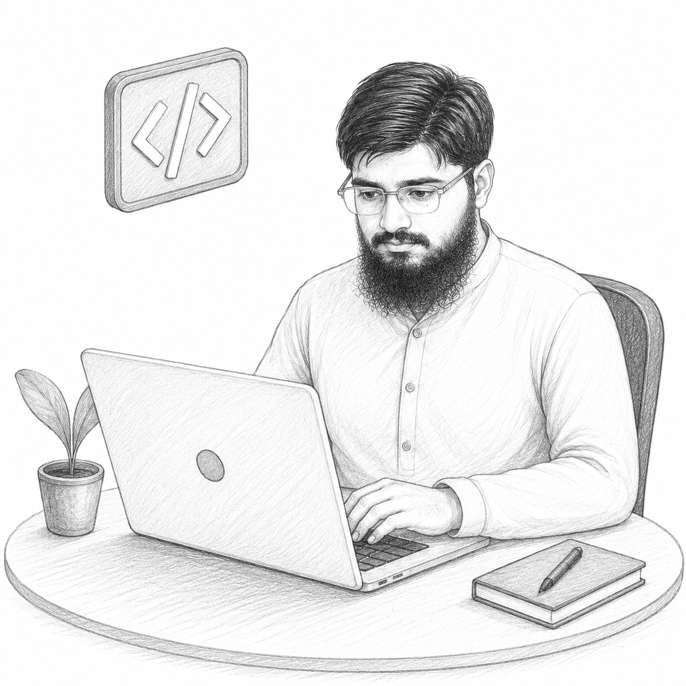
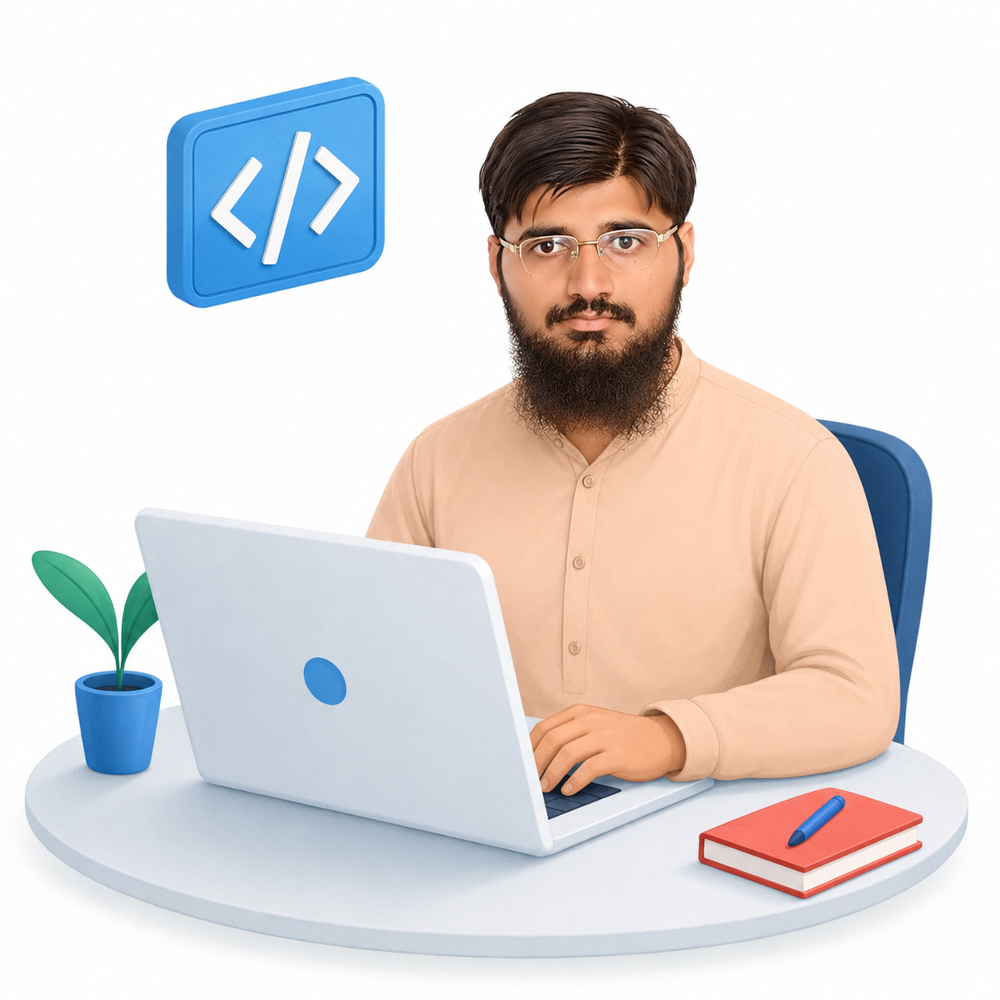

Hi! I'm Muhammad Nasarullah Muhammad Nasarullah
and I am a passionate

About Me
I am a Full Stack Web Developer with a strong passion for building modern, responsive, and user-friendly
web applications. I specialize in both frontend and backend development, creating seamless digital
experiences from design to deployment.
I enjoy turning ideas into real-world products using technologies like HTML, CSS, JavaScript, and modern
frameworks. On the backend, I focus on building secure and efficient APIs and managing databases to
ensure smooth application performance.
I am continuously learning and improving my skills to stay updated with the latest web technologies and
industry trends. My goal is to become a highly skilled developer who builds impactful and scalable web
solutions.
Education
BS Computer Engineering (BSCE)
3.23/4.00
Intermediate
709/1100
Matric
966/1100
Work Experience

Advance Web application Development
Completed a 3-month Web Development Internship focused on Frontend Development, building responsive and user-friendly websites using HTML, CSS, JavaScript, and Bootstrap.
AI Based Fire Detection System
Developed an AI-Based Fire Detection System using YOLO and Computer Vision for real-time fire detection with automated email alerts.
STEAM Education Training
Completed STEAM Education Training, gaining knowledge of Science, Technology, Engineering, Arts, and Mathematics through hands-on learning and innovative teaching methodologies.
STEAM Trainer (Roll as A TechFellow)
Served as a Tech Fellow, delivering STEAM education, mentoring students, and conducting technology-based learning activities.